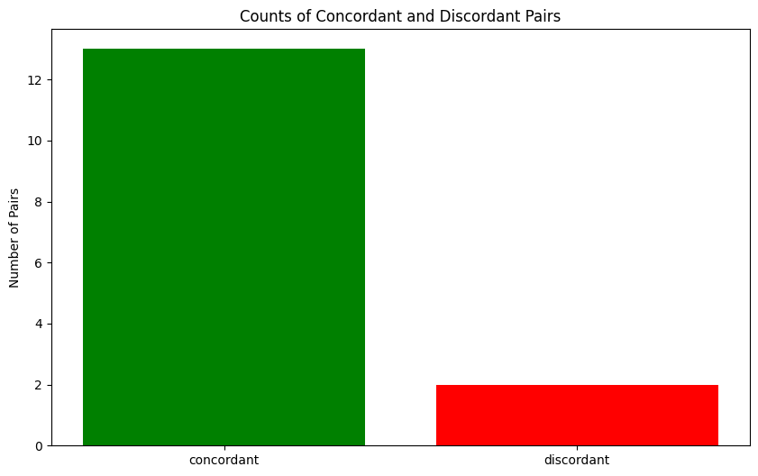
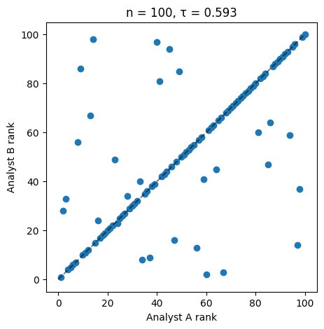
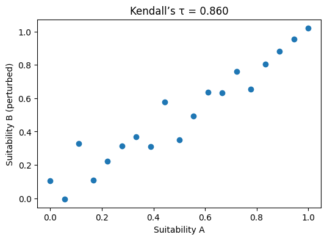
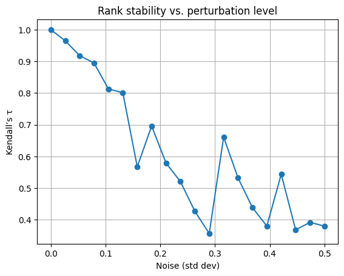
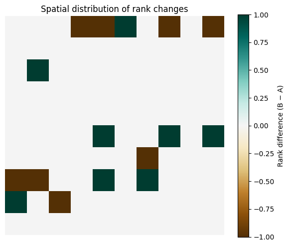

In statistics, the Kendall rank correlation coefficient, commonly referred to as Kendall’s tau (τ), is a statistic used to measure the ordinal association between two measured quantities. A T test is a non-parametrichypothesis test for statistical dependence based on the \(T\) coefficient. It is a measure of rank correlation: the similarity of the orderings of data when ranked by each of the quantities. It is named after Maurice Kendall, who developed it in 1938, though Gustav Fechner has proposed a similar measure in the context of time series in 1897.
Kendall’s motification was to create a rubust, intuitive measure of association between two rankings–one that was: - non parameteric – meaning it made no assumptions about the distribution of the data - intuative in interpretation – meaning it could be easily understood (based on concordant and discordant pairs) and - suitable for ordinal or ranked data (like preferences, ratings, or scores).
Before Kendall’s tau, other correlation measures like Pearson’s correlation coefficient were commonly used, but they assumed linear relationships and required interval or ratio data. Kendall’s tau provided a way to assess relationships in a more flexible manner, especially for non-linear or non-parametric data.
In many real-world problems, especially in decision analysis (also social sciences) data are often ordinal – things we can rank but not measure on a precise numerical scale.
For example: a hydrologist looking to build a groundwater recharge project, might want to rank potential sites based on suitability critiera, and rank them in suitability from 1 (low suitability) to 5 or 10 (high suitability). Kendall’s tau would allow the hydrologist to assess the association between different ranking criteria (like soil type, proximity to water sources, land use, etc.) without making assumptions about the underlying data distribution.
## How it works
Imagine two people rank the same set of sites independently based on their expert opinion of suitability for groundwater recharge.
site
Rater A Rank
Rater B Rank
S1
1
2
S2
2
1
S3
3
4
S4
4
3
S5
5
5
Kendall’s tau looks at all possible pairs of sites (S1 vs S2, S1 vs S3, … S4 vs S5) and asks: - Do the two analysts agree on which site should be ranked higher?
For any pair of sites \((i, j)\): - The pair is concordant if both analysts put the same site higher.
(Example: if \(A\) says \(S2\) better than \(S5\), and \(B\) also says \(S2\) better than \(S5\).) - The pair is discordant if the analysts disagree about which one is better.
(Example: A says \(S1\) better than \(S4\), but \(B\) says \(S4\) better than \(S1\).) - (Ties are possible in general, though not shown in this simple example. We handle those with slight variations of tau.)
Intuition: - If most pairs are concordant → \(\tau\) is close to +1 (the rankings mostly agree). - If most pairs are discordant → \(\tau\) is close to −1 (the rankings mostly disagree / almost inverted). - If agreement and disagreement are about equal → \(\tau\) is near 0.
Here \(P(\text{concordant})\) means:
“Out of all possible pairs of items, what fraction of pairs are concordant?”
In other words, these are not probabilities in the sense of randomness over repeated experiments — they are proportions over all \(\frac{n(n-1)}{2}\) pairs in this dataset.
So you can read \(\tau\) as: > “If I pick two items at random, how much more likely is it that the two rankings agree on their order than disagree?”
That’s the core interpretation.
The counting (pairwise) formula
Let: - \(n\) = number of items being ranked
- \(C\) = number of concordant pairs
- \(D\) = number of discordant pairs
- \(T = \frac{n(n-1)}{2}\) = total number of distinct pairs
This is the same as the “probability” version, just written in terms of counts instead of proportions: - \(\frac{C}{T}\) is \(P(\text{concordant})\) - \(\frac{D}{T}\) is \(P(\text{discordant})\)
So: \[
\tau = \frac{C}{T} - \frac{D}{T}
\]
In practice, we’ll compute \(C\) and \(D\) from two ranked lists, calculate \(\tau\), and then visualize where disagreements are happening spatially or across alternatives.
Next, we’ll implement this calculation in Python, both “by hand” (to see C and D) and using scipy.stats.kendalltau.
Now lets explore how to calculate Kendall’s tau using Python.
# import pandas to create an manipulate dataframesimport pandas as pd# create a sample dataframe with rankings from two analystsdata = pd.DataFrame({"Site": ["A", "B", "C", "D", "E", "F"],"Rank_Analyst1": [1, 2, 3, 4, 5, 6], # Analyst 1 thinks A>B>C>D>E>F"Rank_Analyst2": [1, 3, 2, 4, 6, 5] # Analyst 2 mostly agrees, but swaps B/C and E/F})data
Site
Rank_Analyst1
Rank_Analyst2
0
A
1
1
1
B
2
3
2
C
3
2
3
D
4
4
4
E
5
6
5
F
6
5
Ok, now lets create a function that checks all possible pairings rankings to determine concordant (agreeing) and discordant (disagreeing) pairs.
# itertools is a useful library for creating combinations and permutationsimport itertoolsdef kendall_concordance_table(df, col_x, col_y):""" Create a table showing concordant and discordant pairs between two rankings. df: DataFrame with rankings col_x: column name for first ranking col_y: column name for second ranking Returns a DataFrame with pairwise comparisons and counts of concordant/discordant pairs. """ pairs_info = [] # to store info about each pair C =0# concordant = they agree on order D =0# discordant = they disagree on orderfor (i, j) in itertools.combinations(df.index, 2): # for all unique pairs of indices (i, j) x_i = df.loc[i, col_x] # x_i is the rank of item i in ranking x x_j = df.loc[j, col_x] # x_j is the rank of item j in ranking x y_i = df.loc[i, col_y] # y_i is the rank of item i in ranking y y_j = df.loc[j, col_y] # y_j is the rank of item j in ranking y site_i = df.loc[i, "Site"] # get site names for reporting for item i site_j = df.loc[j, "Site"] # get site names for reporting for item j# Compare pair ordering in each ranking diff_x = x_i - x_j # difference in ranking for pair (i, j) in ranking x diff_y = y_i - y_j # difference in ranking for pair (i, j) in ranking y# If both differences have same sign -> concordant# If opposite sign -> discordant# If diff_x or diff_y == 0, that's a tie (we'll just mark it)if diff_x * diff_y >0: relation ="concordant" C +=1elif diff_x * diff_y <0: relation ="discordant" D +=1else: relation ="tie" pairs_info.append({"Pair": f"{site_i}-{site_j}",f"Order in {col_x}": "i<j"if diff_x <0else"i>j",f"Order in {col_y}": "i<j"if diff_y <0else"i>j","Relation": relation }) pairs_df = pd.DataFrame(pairs_info)return pairs_df, C, D# Now let's use the function on our sample datapairs_df, C, D = kendall_concordance_table(data, "Rank_Analyst1", "Rank_Analyst2")print(f"Concordant pairs (C): {C}, Discordant pairs (D): {D}") # print out the counts of concordant and discordant pairspairs_df # print the output table from the function: kendall_concordance_table()
Concordant pairs (C): 13, Discordant pairs (D): 2
Pair
Order in Rank_Analyst1
Order in Rank_Analyst2
Relation
0
A-B
i<j
i<j
concordant
1
A-C
i<j
i<j
concordant
2
A-D
i<j
i<j
concordant
3
A-E
i<j
i<j
concordant
4
A-F
i<j
i<j
concordant
5
B-C
i<j
i>j
discordant
6
B-D
i<j
i<j
concordant
7
B-E
i<j
i<j
concordant
8
B-F
i<j
i<j
concordant
9
C-D
i<j
i<j
concordant
10
C-E
i<j
i<j
concordant
11
C-F
i<j
i<j
concordant
12
D-E
i<j
i<j
concordant
13
D-F
i<j
i<j
concordant
14
E-F
i<j
i>j
discordant
Compute Kendall’s Tau from first principles
Next we will compute Kendall’s tau manually using Python.
remember that tau is the difference between the probability of concordant and discordant pairs.
For \(n\) items, the total number of distince pairs is given by the formula: \(T = \frac{n(n-1)}{2}\).
Then, we can use the output of the function above which counted the number of concordant and discordant pairs to compute kendall’s tau.
import numpy as np # for numerical operations we use numpyn =len(data) # number of items being rankedtotal_pairs = n * (n -1) /2# total number of distinct pairs Ttau_manual = (C - D) / total_pairs # Kendall's tau formulaprint(f" C = {C}, D = {D}, Total pairs (T): {total_pairs}")print(f"Kendall's tau (manual calculation): {tau_manual:.3f}")
C = 13, D = 2, Total pairs (T): 15.0
Kendall's tau (manual calculation): 0.733
Interpreting the results
if tau is close to +1, the rankings mostly agree if tau is close to 0.5, mostly agree but with notable flips if tau is close to -1, the rankings mostly disagree if tau is close to -0.5, mostly disagree but with agreements if tau is close to 0, there is little association between the rankings
For this synthetic dataset we should see \(\tau\) as high but not 1 because those B vs C and E vs F swaps create discordance.
Next lets visualize the agreement and disagreement between the two rankings.
To do this we will plot…
import matplotlib.pyplot as pltcolor_map = { 'concordant': 'green', 'discordant': 'red', "tie": 'gray' }plt.figure(figsize=(10, 6))pair_counts = pairs_df["Relation"].value_counts()bars = plt.bar(pair_counts.index, pair_counts.values, color=[color_map[r] for r in pair_counts.index])plt.ylabel("Number of Pairs")plt.title("Counts of Concordant and Discordant Pairs")plt.show()

So looking at the figure we can see that most of the pairs are concordant, we have a few discordant pairs (in red) and no ties (gray). We got a kendall’s tau of 0.733 which indicates a strong positive association between the two rankings.
Compare manual calculation to scipy.stats
Now that we understand the basic calculation of Kendall’s tau, lets try to use the scipy.stats version of kendall’s tau to see if we get the same results and how our manual calculation compares to the built-in function in scipy.stats
from scipy.stats import kendalltau # import kendalltau from scipy.stats# recall the structure of our dataprint(data.columns) # show column namesdata.head(5) # show first 5 rows of data
tau_scipy, p_value = kendalltau(data["Rank_Analyst1"], data["Rank_Analyst2"])print(f"Kendall's tau (scipy.stats): {tau_scipy:.3f}, p-value: {p_value:.3f}")
Kendall's tau (scipy.stats): 0.733, p-value: 0.056
Notice that both our manual calculation and scipy’s kendalltau function give the same result of approximately 0.733, confirming the correctness of our manual implementation. But the scipy function also provides a p-value for testing the hypothesis of no association (\(\tau = 0\))
So the scipy version does two things:
It computes Kendall’s tau using an efficient algorithm measuring the strength of monotonic association between two rankings.
It provides a p-value for testing the null hypothesis that there is no association between the two rankings (i.e., \(\tau = 0\)). A low p-value (typically < 0.05) indicates that we can reject the null hypothesis and conclude that there is a statistically significant association between the rankings.
Here we got a p-value of approximately 0.056, which indicates that the association is marginally significant at the 0.05 level. This suggests that while there is a positive association between the rankings, we should be cautious in interpreting it as statistically significant. Why? Because our sample dataset is small (only 5 items), with a such a small number of pairs its more likely that random chance could produce similar levels of concordance. lets see what happens when we increase the size of the dataset.
Adding complexity
To further explore the behavior of Kendall’s tau, we can increase the size of our dataset from 6 sites to 30. We will randomly generate base ranking, then create a slightly “noisy” version to simulate small differences in judgement or weight perturbations.
np.random.seed(32) # for reproducibilityn =100# change this and re-run as well to see the effect of sample size swap_n =30# number of swaps to introduce, change this value and re-run to see different levels of disagreement# Analyst A: perfect ranking 1 -> nrank_A = np.arange(1, n +1) # Analyst A ranks items from 1 to n# Analyst B: same order bit with some random swaps (simulateing disagreement)rank_B = rank_A.copy() # start with same ranking as Analyst Aswap_indices = np.random.choice(n, size=swap_n, replace=False) # choose 5 random indices to swapnp.random.shuffle(swap_indices) # shuffle the selected indicesrank_B[swap_indices] = rank_B[np.random.permutation(swap_indices)] # perform the swapstau, p_value = kendalltau(rank_A, rank_B)print(f"Kendall's tau between Analyst A and B: {tau:.3f}, p-value: {p_value:.3f}")# Visualize the rankings in a scatter plotplt.figure(figsize=(5,5))plt.scatter(rank_A, rank_B)plt.plot([0,n],[0,n],'k--',alpha=0.5)plt.xlabel("Analyst A rank")plt.ylabel("Analyst B rank")plt.title(f"n = {n}, τ = {tau:.3f}")plt.show()
Kendall's tau between Analyst A and B: 0.593, p-value: 0.000

Next lets add noise a different way.
First we will create a set of data, we will call base_scores we will just take \(n\) numbers spaced equally from 0 to 1
then we will create alternative scores which are the base_scores with some noise added, noise from a random normal distribution.
n =19# change this depending on the sample size you wantnoise_factor =0.08# this is the standard devation of the distribution from which the noise is generated, try 0.1, 0.05, 1, see how this affects kendalls taubase_scores = np.linspace(0,1,n)#print(f"base_scores {base_scores}")noise = np.random.normal (0,noise_factor,n) # create noise by drawing random samples from a normal gaussian distributionalt_scores = base_scores + noise # add the noise to the base scores to create alternative scores#print(f"alt scores (base scores + noise) {alt_scores}")rank_base = pd.Series(base_scores).rank() # rank the original scores, (remember we want ranks not scores)rank_alt = pd.Series(alt_scores).rank() # the base scores have been changed a bit randomly so they will rank differently when their rank is calculated# now lets calculate kendall's tautau, p_value = kendalltau(rank_base, rank_alt)print(f"τ = {tau:.3f}; pvalue = {p_value:.5f}")
τ = 0.860; pvalue = 0.00000
# plot the relationship between rank_base, and rank_alt (our two different rankings)plt.figure(figsize=(6,4))plt.scatter(base_scores, alt_scores)plt.xlabel("Suitability A")plt.ylabel("Suitability B (perturbed)")plt.title(f"Kendall’s τ = {tau:.3f}")plt.show()

Lets now look at how changing the level of noise in the data affects the kendalls tau
We will generate many random pertubations and compute \(\tau\) each time. This mimics the way sensitivity analysis samples random weight combinations in a Weighted Linear Combination (WLC). basically we are looking at the kendall’s tau through time, and automating the changing of the standard devation within the noise addition to see how adding different levels of noise affects kendall’s tau.
noise_levels = np.linspace(0,0.5,20)#print(noise_levels)taus = []for s in noise_levels: alt = base_scores + np.random.normal(0 , s , n) # recall n is defined above in previous example as is base_scores taus.append(kendalltau(pd.Series(base_scores).rank(), pd.Series(alt).rank())[0])plt.plot(noise_levels, taus, marker='o')plt.xlabel("Noise (std dev)")plt.ylabel("Kendall’s τ")plt.title("Rank stability vs. perturbation level")plt.grid(True)plt.show()

you can see from the above figure that as noise increases kendall’s tau a measure of similarity between rankings decreases, rank stability decreases.
real-world example - Countries Ranked by Life Expectency and GDP
Ok, enough with fake data sets, lets step away from the hard sciences for a second and look at something more social. Lets look at how life expectancy compares to GDP, we would think life expectancy is higher in rich countries and lower in poor countries. So we can get the data on life expectancy, and we can get the data on GDP, then rank the countries in order of GDP and life expectancy, and compare how these two different ways to rank countries are concordant or discordant using Kendalls Tau
to see how we cleaned and created these datasets see this notebook: Data\DataWranglingScripts\GDPvLifeExpectency2022_countries_ranked.ipynb
We see a strong positive rank correlation, which is what we would expect. Wealthier countries generally have longer life expectancy, though the relationship isnt perfect. Now lets visualize the data.
Next we will zoom in on the top 40 countries in terms of GDP and see if the kendalls tau is better or worse when we exclude all but the 40 richest.
# Sort by GDP rank (1 = richest)df_top40 = ( df .sort_values("GDP_PC_RANK_2022", ascending=True) .head(40) .copy())print(df_top40[["Country Name", "GDP_PC_RANK_2022", "LIFE_EX_YRS_RANK_2022"]].head())print(f"Number of countries in subset: {len(df_top40)}")
Country Name GDP_PC_RANK_2022 LIFE_EX_YRS_RANK_2022
144 Monaco 1.0 2.0
133 Liechtenstein 2.0 3.0
140 Luxembourg 3.0 14.0
27 Bermuda 4.0 42.0
172 Norway 5.0 11.0
Number of countries in subset: 40
The analysis of country rank in terms of GDP per capita vs life expectancy using Kendall’s tau tells us that overall life expectency is correlated with GDP per capita in terms of how contries compare to eachother (rank), however the correlation is much worse in the rich countries, why might that be?
CONCEPTUAL QUESTIONS
Is Kendall’s Tau a good way to measure the correlation of these two variables?
answer: Its more approriate to look at how the Life Expectency values compare to the GDP per capita directly using Pearson’s R, which compares one number to another. Kendall’s Tau is for comparing the ranks, so the colored rank figure shows us that countries below the line, are under performing in terms of life expectancy vs GDP relative to their neighbors. It is also telling us the the GDP life expectency relationship breaks down at higher levels of GDP or is less meaningful.
Why might this relationship breakdown when subsetting the data to only the richest countries?
Spatial Rank Correlation
Using Kendalls Tau for suitability mapping sensitivity Analysis
In a Weighted Linear Combination (WLC) or other GIS-MCDA, you often generate suitability rasters under different weighting schemes, e.g.:
Each raster cell gets a suitability score. You can rank cells (1 = most suitable) for each scenario, then compute Kendall’s \(\tau\) between the two rankings.
simulated MCDA suitability
We will build two small 10x10 rasteres (100 cells):
suitability_A –> Baseline Scenario suitability_B –> slightly perturbed version (change one weight layer)
Then flatted both to 1D arrays (each cell = one observation)
rank_diff = (rank_B - rank_A).values.reshape(grid_size, grid_size)plt.figure(figsize=(6,5))plt.imshow(rank_diff, cmap="BrBG", vmin=rank_diff.min(), vmax=rank_diff.max())plt.colorbar(label="Rank difference (B − A)")plt.title("Spatial distribution of rank changes")plt.axis("off")plt.tight_layout()plt.show()

Review Questions
Conceptual
What type of relationship does Kendall’s rank correlation coefficient (\(\tau\)) measure between two variables?
In what ways does Kendall’s \(\tau\) differ from Pearson’s \(r\) correlation coefficient?
What do we mean by a concordant pair and a discordant pair in the context of Kendall’s \(\tau\)?
Write the general formula for Kendall’s \(\tau\) in terms of the number of concordant (\(C\)) and discordant (\(D\)) pairs, and the total number of pairs (\(T\)).
What does a \(\tau\) value of \(+1\), \(0\), and \(-1\) indicate about the association between two rankings?
Why is Kendall’s \(\tau\) considered a non-parametric statistic? What assumption does it avoid that Pearson’s \(r\) requires?
Explain how tied ranks affect the calculation of Kendall’s \(\tau\). What adjustments are sometimes made to account for ties?
How can Kendall’s \(\tau\) be interpreted as a difference in probabilities between concordant and discordant pairs?
What is the computational relationship between Kendall’s \(\tau\) and Spearman’s \(\rho\) in terms of how they treat rank differences?
Why might Kendall’s \(\tau\) be preferred over Pearson’s \(r\) when comparing ordinal data such as survey responses or ranked preferences?
Applied Interpretive
Suppose two analysts rank five sites for groundwater recharge suitability. Analyst A’s and B’s rankings are nearly identical except for one swapped pair. Would you expect \(\tau\) to be closer to 1, 0, or -1? Why?
If a scatter plot of ranks shows that higher values of one ranking generally correspond to higher values of the other but with some local reversals, what approximate range of \(\tau\) would you expect?
Answers
1. Kendall’s rank correlation coefficient (\(\tau\)) measures the strength and direction of monotonic association between two ranked variables. It quantifies how consistently the order of one variable corresponds to the order of another.
2. Kendall’s \(\tau\) is based on the number of concordant and discordant pairs, whereas Pearson’s \(r\) measures linear association based on actual data values. Kendall’s \(\tau\) is non-parametric and uses only rank order information.
3. A concordant pair is one where the relative ordering of two items is the same in both rankings (both increasing or both decreasing). A discordant pair is one where the order is reversed between the two rankings.
4. The general formula is:\[
\tau = \frac{C - D}{T} = \frac{C - D}{\frac{1}{2}n(n - 1)}
\]where \(C\) is the number of concordant pairs, \(D\) is the number of discordant pairs, and \(T\) is the total number of distinct pairs.
5. \(\tau = +1\) indicates perfect agreement (all pairs are concordant), \(\tau = 0\) indicates no association (equal mix of concordant and discordant pairs), and \(\tau = -1\) indicates perfect disagreement (all pairs are discordant).
6. Kendall’s \(\tau\) is non-parametric because it does not assume any specific distribution of the variables or linearity of their relationship. It relies only on the ordinal information of the ranks rather than their numeric values.
7. Tied ranks reduce the number of distinct pairs that can be classified as concordant or discordant. Adjusted versions of Kendall’s \(\tau\) (e.g., \(\tau_b\)) include correction factors to handle ties in one or both rankings.
8. Kendall’s \(\tau\) can be expressed as a difference in probabilities:\[
\tau = P(\text{concordant}) - P(\text{discordant})
\]meaning it represents how much more likely it is that two randomly chosen observations are ranked in the same order than in the opposite order.
9. Spearman’s \(\rho\) is based on the differences between ranks and approximates Pearson’s \(r\) computed on ranks, while Kendall’s \(\tau\) directly counts pairwise order agreements. Both measure monotonic relationships, but Kendall’s \(\tau\) is generally smaller in magnitude and has a clearer probabilistic interpretation.
10. Kendall’s \(\tau\) is preferred for ordinal data because it depends only on the relative ordering of observations, making it robust to nonlinearity and outliers. Pearson’s \(r\) assumes interval-scale data and linearity, which are often not valid for ranked responses.
11. The value of \(\tau\) would be close to \(+1\), since most pairs remain concordant and only one pair is discordant. A single reversal in a small dataset slightly lowers \(\tau\) but does not change its sign.
12. The value of \(\tau\) would likely fall between \(0.4\) and \(0.8\), indicating a moderately strong positive monotonic association with some inconsistencies in the ordering.